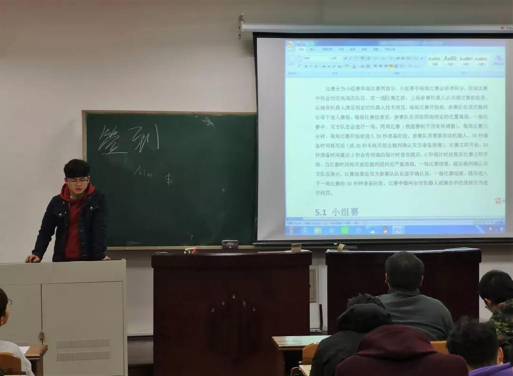
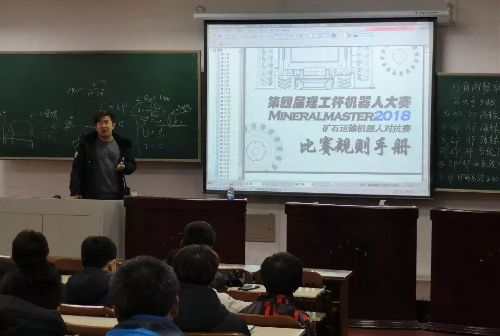
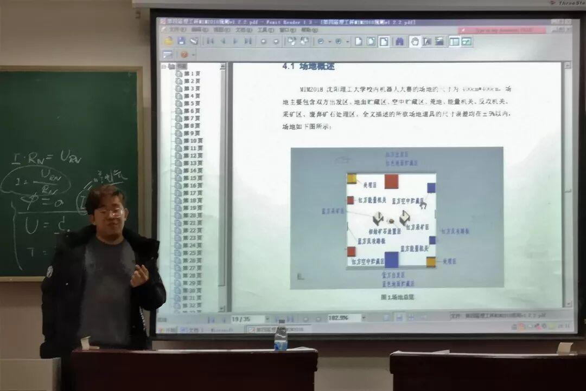
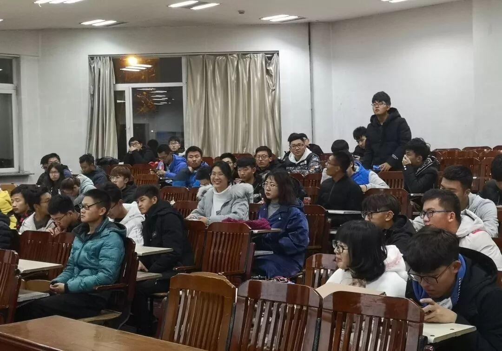
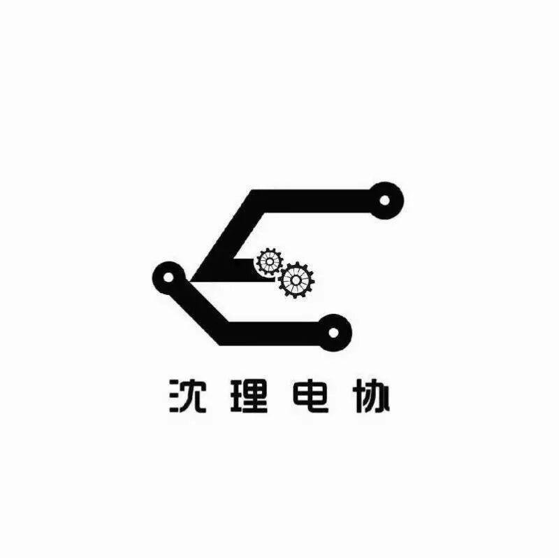

第五次教学
第五次教学
今天，电协的周五日常教学结束，今天的结束也意味着电协所有教学活动的结束。


此次教学中，学长们贯彻了我们电协一如既往的认真态度。哈哈，不信？现在请允许我带着大家走进我们的教学中，感受我们的氛围。


在教学中，学长向我们全方位立体的剖析了此次矿石运输机器人大赛的……额，说到这是不是还有人不知道什么是矿石运输机器人大赛，学长讲述的关于竞赛的详细规则对我们还是很有帮助的。学长从参赛队伍的要求讲起，详细讲解了机器人技术规范，通用技术，规格规范，最后到场地概述，几乎是你能想起来的，学长都已经进行了讲解。

学长在最后还组织了自由提问环节。大家向学长问了之前教学中的疑惑，这是学长在讲台前讲解的场景。不仅仅是用口头在叙述，大家仔细看黑板上的板书，全是学长自己一人在解答我们疑惑的时候所写。最后，所有的教学活动已圆满结束，它的结束又象征一批大一新生的开始。 再次向我们友爱的学长致敬,向努力学习的小可爱们挥手告别。

我们都是时间旅行者
为了寻找生命中的光
终其一生
行走在漫长的旅途上
Waiting for you


文字：苏 闯
图片：李亭熹
编辑：黄信涵
